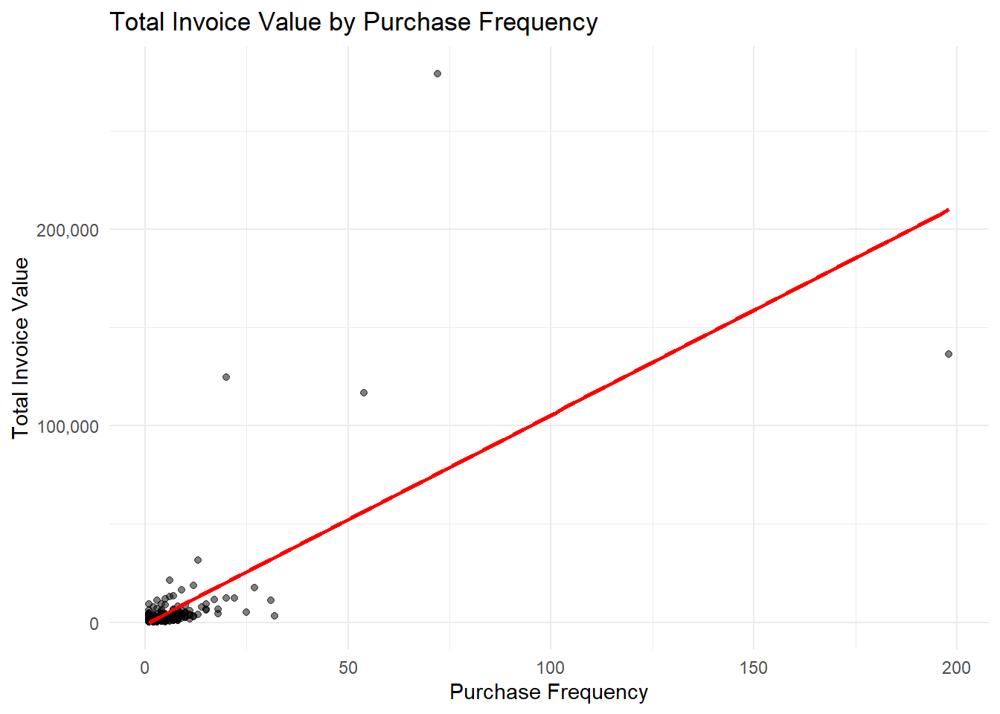
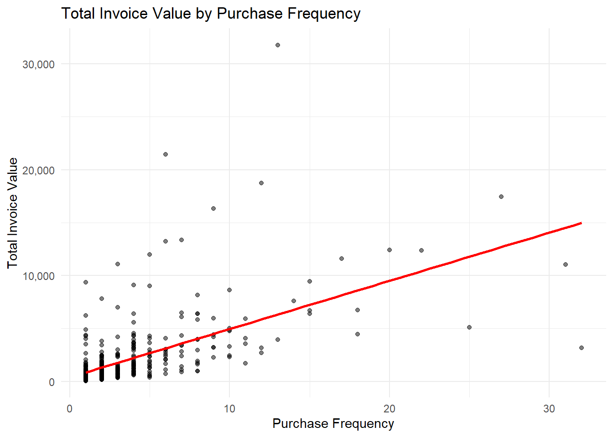

library(readxl) #for loading Excel files
library(dplyr) #for data processing/cleaning
library(tidyr) #for data processing/cleaning
library(skimr) #for nice visualization of data
library(here) #to set paths
library(ggplot2) # for visualization
library(scales) # for labelsCleaning data ‘Superstore’
Setup
Install and load needed packages.
Data loading
Loading data using here function.
# path to data
# note the use of the here() package and not absolute paths
data_location <- here::here("data","raw-data","superstoredata.csv")
raw_data <- read.csv(data_location)Check data
Checking data
dplyr::glimpse(raw_data)Rows: 541,909
Columns: 9
$ InvoiceNo <chr> "536365", "536365", "536365", "536365", "536365", "536365"…
$ StockCode <chr> "85123A", "71053", "84406B", "84029G", "84029E", "22752", …
$ Description <chr> "WHITE HANGING HEART T-LIGHT HOLDER", "WHITE METAL LANTERN…
$ Quantity <int> 6, 6, 8, 6, 6, 2, 6, 6, 6, 32, 6, 6, 8, 6, 6, 3, 2, 3, 3, …
$ InvoiceDate <chr> "12/1/2010 8:26", "12/1/2010 8:26", "12/1/2010 8:26", "12/…
$ UnitPrice <dbl> 2.55, 3.39, 2.75, 3.39, 3.39, 7.65, 4.25, 1.85, 1.85, 1.69…
$ CustomerID <dbl> 17850, 17850, 17850, 17850, 17850, 17850, 17850, 17850, 17…
$ Country <chr> "United Kingdom", "United Kingdom", "United Kingdom", "Uni…
$ Sales <dbl> 15.30, 20.34, 22.00, 20.34, 20.34, 15.30, 25.50, 11.10, 11…skimr::skim(raw_data)| Name | raw_data |
| Number of rows | 541909 |
| Number of columns | 9 |
| _______________________ | |
| Column type frequency: | |
| character | 5 |
| numeric | 4 |
| ________________________ | |
| Group variables | None |
Variable type: character
| skim_variable | n_missing | complete_rate | min | max | empty | n_unique | whitespace |
|---|---|---|---|---|---|---|---|
| InvoiceNo | 0 | 1 | 6 | 7 | 0 | 25900 | 0 |
| StockCode | 0 | 1 | 1 | 12 | 0 | 4070 | 0 |
| Description | 0 | 1 | 0 | 35 | 1454 | 4224 | 0 |
| InvoiceDate | 0 | 1 | 13 | 16 | 0 | 23260 | 0 |
| Country | 0 | 1 | 3 | 20 | 0 | 38 | 0 |
Variable type: numeric
| skim_variable | n_missing | complete_rate | mean | sd | p0 | p25 | p50 | p75 | p100 | hist |
|---|---|---|---|---|---|---|---|---|---|---|
| Quantity | 0 | 1.00 | 9.55 | 218.08 | -80995.00 | 1.00 | 3.00 | 10.00 | 80995.0 | ▁▁▇▁▁ |
| UnitPrice | 0 | 1.00 | 4.61 | 96.76 | -11062.06 | 1.25 | 2.08 | 4.13 | 38970.0 | ▁▇▁▁▁ |
| CustomerID | 135080 | 0.75 | 15287.69 | 1713.60 | 12346.00 | 13953.00 | 15152.00 | 16791.00 | 18287.0 | ▇▇▇▇▇ |
| Sales | 0 | 1.00 | 17.99 | 378.81 | -168469.60 | 3.40 | 9.75 | 17.40 | 168469.6 | ▁▁▇▁▁ |
Cleaning
The purpose of this project is to study purchase pattern of customers residing outside of UK.The data set data_without_uk excludes all sales in the UK. It has 46431 observations with 9 variables. It is important to note that this data set accounts sales of a particular item as an observation. This means different items sold in the same Invoice appears as separate observations and it is most likely that an Invoice number could appear in separate observations.
# Exclude "United Kingdom" from the data set
data_without_uk <- subset(raw_data, Country != "United Kingdom")
skimr::skim(data_without_uk)| Name | data_without_uk |
| Number of rows | 46431 |
| Number of columns | 9 |
| _______________________ | |
| Column type frequency: | |
| character | 5 |
| numeric | 4 |
| ________________________ | |
| Group variables | None |
Variable type: character
| skim_variable | n_missing | complete_rate | min | max | empty | n_unique | whitespace |
|---|---|---|---|---|---|---|---|
| InvoiceNo | 0 | 1 | 6 | 7 | 0 | 2406 | 0 |
| StockCode | 0 | 1 | 1 | 7 | 0 | 2807 | 0 |
| Description | 0 | 1 | 6 | 35 | 0 | 2916 | 0 |
| InvoiceDate | 0 | 1 | 13 | 16 | 0 | 2372 | 0 |
| Country | 0 | 1 | 3 | 20 | 0 | 37 | 0 |
Variable type: numeric
| skim_variable | n_missing | complete_rate | mean | sd | p0 | p25 | p50 | p75 | p100 | hist |
|---|---|---|---|---|---|---|---|---|---|---|
| Quantity | 0 | 1.00 | 19.66 | 47.23 | -624.00 | 4.00 | 10.00 | 16.00 | 2400.00 | ▁▇▁▁▁ |
| UnitPrice | 0 | 1.00 | 5.45 | 63.36 | 0.00 | 1.25 | 1.95 | 3.75 | 4161.06 | ▇▁▁▁▁ |
| CustomerID | 1480 | 0.97 | 13193.11 | 1085.61 | 12347.00 | 12484.00 | 12658.00 | 14156.00 | 17844.00 | ▇▁▂▁▁ |
| Sales | 0 | 1.00 | 33.60 | 104.43 | -8322.12 | 12.50 | 17.40 | 30.00 | 4992.00 | ▁▁▁▇▁ |
The data inspection showed missing values in CustomerID, issues with signs and distribution of Quantity and Sales and format of date. It also pointed out that InvoiceNo, StockCode, Description and Country are coded as character variables in the data which need to be changed to factors for better data manipulation.
First, there are 1480 missing values in CustomerID. Customer behavior is a crucial part of this analysis which cannot be tracked without the unique customerID. The observations without CustomerID do not help in doing meaningful analysis and are dropped. Further, CustomerID is coded as a numerical variable in the original data and it needs to be converted to factor variable. Country, Description and StockCode are also converted to factors from character variables.
# Subset the data by excluding rows where CustomerID is NA
clean_data_step1 <- data_without_uk %>%
filter(!is.na(CustomerID)) %>% #excludes observation without CustomerID
mutate(InvoiceNo = as.factor(InvoiceNo), #converts InvoiceNo to a factor
CustomerID = as.factor(CustomerID), #converts CustomerID to a factor
Country = as.factor(Country), #converts Country to a factor
Description = as.factor(Description), #converts Description to a factor
StockCode = as.factor(StockCode)) #converts StockCode to a factor
# Checking the cleaned data
skimr::skim(clean_data_step1)| Name | clean_data_step1 |
| Number of rows | 44951 |
| Number of columns | 9 |
| _______________________ | |
| Column type frequency: | |
| character | 1 |
| factor | 5 |
| numeric | 3 |
| ________________________ | |
| Group variables | None |
Variable type: character
| skim_variable | n_missing | complete_rate | min | max | empty | n_unique | whitespace |
|---|---|---|---|---|---|---|---|
| InvoiceDate | 0 | 1 | 13 | 16 | 0 | 2301 | 0 |
Variable type: factor
| skim_variable | n_missing | complete_rate | ordered | n_unique | top_counts |
|---|---|---|---|---|---|
| InvoiceNo | 0 | 1 | FALSE | 2333 | 570: 259, 562: 219, 569: 182, 563: 171 |
| StockCode | 0 | 1 | FALSE | 2796 | POS: 1110, 224: 331, 223: 313, 225: 218 |
| Description | 0 | 1 | FALSE | 2903 | POS: 1110, REG: 331, ROU: 313, PLA: 218 |
| CustomerID | 0 | 1 | FALSE | 422 | 149: 5903, 146: 2085, 141: 1420, 124: 778 |
| Country | 0 | 1 | FALSE | 36 | Ger: 9495, Fra: 8491, EIR: 7485, Spa: 2533 |
Variable type: numeric
| skim_variable | n_missing | complete_rate | mean | sd | p0 | p25 | p50 | p75 | p100 | hist |
|---|---|---|---|---|---|---|---|---|---|---|
| Quantity | 0 | 1 | 19.99 | 47.92 | -624.00 | 4.00 | 10.00 | 16.00 | 2400.00 | ▁▇▁▁▁ |
| UnitPrice | 0 | 1 | 5.11 | 57.38 | 0.00 | 1.25 | 1.95 | 3.75 | 4161.06 | ▇▁▁▁▁ |
| Sales | 0 | 1 | 34.09 | 101.88 | -8322.12 | 12.60 | 17.40 | 30.00 | 4992.00 | ▁▁▁▇▁ |
There are negative values in quantity and sales due to order cancellation. An inspection is carried out to check the number of such observations are in the data set. It is found that there are 1372 observations with negative Quantity and Sales.
#Filter observations where Quantity and Sales are negative
negative_sales <- clean_data_step1 %>%
filter (Quantity < 0 & Sales < 0)
# Count the negative sales
count(negative_sales) n
1 1372Next step is to find matching original sales entries corresponding to the negative entries based on CustomerID, StockCode, Quantity and Sales figures. 1372 matches were found, which is equal to the no. of observations with negative Quantity and Sales figures.
positive_sales <- clean_data_step1 %>%
filter(Quantity > 0 & Sales > 0)
count(positive_sales) n
1 43563#Checking for matches
matched_sales <- negative_sales %>%
rowwise() %>%
mutate(match_found = any(StockCode %in% positive_sales$StockCode &
CustomerID %in% positive_sales$CustomerID))
count(matched_sales)# A tibble: 1,372 × 1
# Rowwise:
n
<int>
1 1
2 1
3 1
4 1
5 1
6 1
7 1
8 1
9 1
10 1
# ℹ 1,362 more rows#The next attempt is to match returns to their original sales and get rid of both matched transactions. However, this needs further work as the below codes are resulting 582 observations in original sales instead of 1372.
# Add an identifier to each row in both data sets to track them (Marked as comment because this chunk of code needs further work and also takes a longer time to run)
"negative_sales <- negative_sales %>% mutate(neg_id = row_number())
positive_sales <- positive_sales %>% mutate(pos_id = row_number())
# Initialize a vector to keep track of matched negative_sales' IDs
matched_neg_ids <- integer(0)
# Initialize an empty data frame to store matches
matches <- data.frame(neg_id = integer(), pos_id = integer())
# Iterate over positive_sales to find matches in (Marked as comment because it takes a longer time to run this code)
for (pos_row in 1:nrow(positive_sales)) {
pos_sale <- positive_sales[pos_row, ]
# Attempt to match with negative_sales, excluding already matched rows
potential_matches <- negative_sales %>%
filter(
!neg_id %in% matched_neg_ids, # Exclude already matched ones
CustomerID == pos_sale$CustomerID,
StockCode == pos_sale$StockCode,
Quantity == -pos_sale$Quantity, # Matching negative of Quantity
Sales == -pos_sale$Sales # Matching negative of Sales
)
if (nrow(potential_matches) > 0) {
# If a match is found, take the first one
first_match <- potential_matches[1, ]
matched_neg_ids <- c(matched_neg_ids, first_match$neg_id)
# Record the match
matches <- rbind(matches, data.frame(neg_id = first_match$neg_id, pos_id = pos_sale$pos_id))
}
}
# Extract matched rows based on IDs
matched_negative_sales <- negative_sales %>% filter(neg_id %in% matches$neg_id)
matched_positive_sales <- positive_sales %>% filter(pos_id %in% matches$pos_id)
print(matched_negative_sales)
print(matched_positive_sales)"[1] "negative_sales <- negative_sales %>% mutate(neg_id = row_number())\npositive_sales <- positive_sales %>% mutate(pos_id = row_number())\n\n# Initialize a vector to keep track of matched negative_sales' IDs\nmatched_neg_ids <- integer(0)\n\n# Initialize an empty data frame to store matches\nmatches <- data.frame(neg_id = integer(), pos_id = integer())\n\n# Iterate over positive_sales to find matches in (Marked as comment because it takes a longer time to run this code)\nfor (pos_row in 1:nrow(positive_sales)) {\n pos_sale <- positive_sales[pos_row, ]\n \n # Attempt to match with negative_sales, excluding already matched rows\n potential_matches <- negative_sales %>%\n filter(\n !neg_id %in% matched_neg_ids, # Exclude already matched ones\n CustomerID == pos_sale$CustomerID,\n StockCode == pos_sale$StockCode,\n Quantity == -pos_sale$Quantity, # Matching negative of Quantity\n Sales == -pos_sale$Sales # Matching negative of Sales\n )\n \n if (nrow(potential_matches) > 0) {\n # If a match is found, take the first one\n first_match <- potential_matches[1, ]\n matched_neg_ids <- c(matched_neg_ids, first_match$neg_id)\n \n # Record the match\n matches <- rbind(matches, data.frame(neg_id = first_match$neg_id, pos_id = pos_sale$pos_id))\n }\n}\n\n# Extract matched rows based on IDs \nmatched_negative_sales <- negative_sales %>% filter(neg_id %in% matches$neg_id)\nmatched_positive_sales <- positive_sales %>% filter(pos_id %in% matches$pos_id)\nprint(matched_negative_sales)\nprint(matched_positive_sales)"Observations with negative Quantity and Sales are dropped though unsuccessful in finding exact no. of matching original transactions. This brought down the total number of observations to 43563.
clean_data_step2 <- clean_data_step1 %>%
filter(Quantity > 0, Sales > 0)
skimr::skim(clean_data_step2)| Name | clean_data_step2 |
| Number of rows | 43563 |
| Number of columns | 9 |
| _______________________ | |
| Column type frequency: | |
| character | 1 |
| factor | 5 |
| numeric | 3 |
| ________________________ | |
| Group variables | None |
Variable type: character
| skim_variable | n_missing | complete_rate | min | max | empty | n_unique | whitespace |
|---|---|---|---|---|---|---|---|
| InvoiceDate | 0 | 1 | 13 | 16 | 0 | 1862 | 0 |
Variable type: factor
| skim_variable | n_missing | complete_rate | ordered | n_unique | top_counts |
|---|---|---|---|---|---|
| InvoiceNo | 0 | 1 | FALSE | 1886 | 570: 259, 562: 219, 569: 182, 563: 171 |
| StockCode | 0 | 1 | FALSE | 2784 | POS: 1072, 223: 301, 224: 297, 225: 214 |
| Description | 0 | 1 | FALSE | 2890 | POS: 1072, ROU: 301, REG: 297, PLA: 214 |
| CustomerID | 0 | 1 | FALSE | 418 | 149: 5675, 146: 2076, 141: 1400, 124: 714 |
| Country | 0 | 1 | FALSE | 36 | Ger: 9040, Fra: 8341, EIR: 7236, Spa: 2484 |
Variable type: numeric
| skim_variable | n_missing | complete_rate | mean | sd | p0 | p25 | p50 | p75 | p100 | hist |
|---|---|---|---|---|---|---|---|---|---|---|
| Quantity | 0 | 1 | 20.91 | 47.96 | 1.00 | 6.00 | 12.00 | 18.00 | 2400.00 | ▇▁▁▁▁ |
| UnitPrice | 0 | 1 | 4.36 | 43.16 | 0.04 | 1.25 | 1.95 | 3.75 | 4161.06 | ▇▁▁▁▁ |
| Sales | 0 | 1 | 36.80 | 87.26 | 0.19 | 13.20 | 17.70 | 30.00 | 4992.00 | ▇▁▁▁▁ |
Inspection is required in the distribution of Quantity, unit price and Sales, the higher values of these variable are concentrated at the higher percentiles. I focused on distribution of UnitPrice at small intervals from 75% to 100%.
# Calculate higher percentiles within the 3rd quartile to max range
percentiles <- quantile(clean_data_step2$UnitPrice, probs = c(0.75, 0.90, 0.95, 0.99, 0.995, 0.996, 0.997, 0.998, 0.999, 1))
print(percentiles) 75% 90% 95% 99% 99.5% 99.6% 99.7% 99.8%
3.750 8.150 12.750 25.000 40.000 40.000 50.000 50.000
99.9% 100%
128.942 4161.060 The results indicate that there are only limited items that are above the unit price of 25. Observations wherein UnitPrice is above 25 are filtered for further examination. It resulted into 433 observations.
# Filter rows where UnitPrice is greater than 25
UnitPrice_above25 <- clean_data_step2[clean_data_step2$UnitPrice > 25, ]
str(UnitPrice_above25)'data.frame': 433 obs. of 9 variables:
$ InvoiceNo : Factor w/ 2333 levels "536370","536389",..: 6 11 20 21 23 32 34 35 44 51 ...
$ StockCode : Factor w/ 2796 levels "10002","10120",..: 2793 2796 2796 2796 2553 2796 2793 2793 2796 2796 ...
$ Description: Factor w/ 2903 levels " 4 PURPLE FLOCK DINNER CANDLES",..: 452 1928 1928 1928 1860 1928 452 452 1928 1928 ...
$ Quantity : int 1 2 1 2 4 1 1 1 6 1 ...
$ InvoiceDate: chr "12/1/2010 14:05" "12/3/2010 10:36" "12/3/2010 15:14" "12/3/2010 15:45" ...
$ UnitPrice : num 50 40 28 28 43 ...
$ CustomerID : Factor w/ 422 levels "12347","12348",..: 400 380 358 313 178 364 400 400 341 361 ...
$ Country : Factor w/ 36 levels "Australia","Austria",..: 11 33 27 19 14 27 11 11 27 27 ...
$ Sales : num 50 80 28 56 172 ...The components of description was checked using the unique function which resulted into 2903 levels for 433 observations. With the help of ChatGPT, it was found that in R, when a subset of a data frame is created, the factor levels in the subset are not automatically dropped even if they are not present in the subset. To resolve this, the unused levels required to be dropped using the droplevels() function.
#Attempt without dropping the unused factor levels
unique_categories_initial <- unique(UnitPrice_above25$Description)
print(unique_categories_initial) [1] CARRIAGE POSTAGE
[3] PINK PAINTED KASHMIRI CHAIR CABIN BAG VINTAGE RETROSPOT
[5] SCHOOL DESK AND CHAIR SET/4 WHITE RETRO STORAGE CUBES
[7] VINTAGE BLUE KITCHEN CABINET VINTAGE RED KITCHEN CABINET
[9] WOOD AND GLASS MEDICINE CABINET RUSTIC SEVENTEEN DRAWER SIDEBOARD
[11] Manual 3 TIER SWEETHEART GARDEN SHELF
[13] IVORY EMBROIDERED QUILT CABIN BAG VINTAGE PAISLEY
[15] CHEST NATURAL WOOD 20 DRAWERS DANISH ROSE BEDSIDE CABINET
[17] LOVE SEAT ANTIQUE WHITE METAL CINDERELLA CHANDELIER
[19] SILVER ROCCOCO CHANDELIER
2903 Levels: 4 PURPLE FLOCK DINNER CANDLES ... ZINC WIRE SWEETHEART LETTER TRAY# Dropping unused factor levels in the Description column
UnitPrice_above25$Description <- droplevels(UnitPrice_above25$Description)
# Finding the unique categories again
unique_categories_final <- unique(UnitPrice_above25$Description)
print(unique_categories_final) [1] CARRIAGE POSTAGE
[3] PINK PAINTED KASHMIRI CHAIR CABIN BAG VINTAGE RETROSPOT
[5] SCHOOL DESK AND CHAIR SET/4 WHITE RETRO STORAGE CUBES
[7] VINTAGE BLUE KITCHEN CABINET VINTAGE RED KITCHEN CABINET
[9] WOOD AND GLASS MEDICINE CABINET RUSTIC SEVENTEEN DRAWER SIDEBOARD
[11] Manual 3 TIER SWEETHEART GARDEN SHELF
[13] IVORY EMBROIDERED QUILT CABIN BAG VINTAGE PAISLEY
[15] CHEST NATURAL WOOD 20 DRAWERS DANISH ROSE BEDSIDE CABINET
[17] LOVE SEAT ANTIQUE WHITE METAL CINDERELLA CHANDELIER
[19] SILVER ROCCOCO CHANDELIER
19 Levels: 3 TIER SWEETHEART GARDEN SHELF ... WOOD AND GLASS MEDICINE CABINETThe above code resulted into 19 categories in product description which have the Unitprice above 25. Some of the high UnitPrice are related to the descriptions such as CARRIAGE, POSTAGE, Manual, appearing to be related to logistics. 1216 observations with such descriptions were dropped from the data since those are less likely to be directly related to customer purchase. The no. of observations came down to 42347.
# Remove observations with specified descriptions
clean_data_step3 <- clean_data_step2[!grepl("Manual", clean_data_step2$Description) &
!grepl("POSTAGE", clean_data_step2$Description) &
!grepl("CARRIAGE", clean_data_step2$Description), ]
# Inspect the cleaned data
skimr::skim(clean_data_step3)| Name | clean_data_step3 |
| Number of rows | 42347 |
| Number of columns | 9 |
| _______________________ | |
| Column type frequency: | |
| character | 1 |
| factor | 5 |
| numeric | 3 |
| ________________________ | |
| Group variables | None |
Variable type: character
| skim_variable | n_missing | complete_rate | min | max | empty | n_unique | whitespace |
|---|---|---|---|---|---|---|---|
| InvoiceDate | 0 | 1 | 13 | 16 | 0 | 1799 | 0 |
Variable type: factor
| skim_variable | n_missing | complete_rate | ordered | n_unique | top_counts |
|---|---|---|---|---|---|
| InvoiceNo | 0 | 1 | FALSE | 1823 | 570: 259, 562: 219, 569: 181, 563: 171 |
| StockCode | 0 | 1 | FALSE | 2779 | 223: 301, 224: 297, 225: 214, 225: 201 |
| Description | 0 | 1 | FALSE | 2885 | ROU: 301, REG: 297, PLA: 214, PLA: 201 |
| CustomerID | 0 | 1 | FALSE | 418 | 149: 5585, 146: 2060, 141: 1387, 124: 713 |
| Country | 0 | 1 | FALSE | 36 | Ger: 8658, Fra: 8034, EIR: 7132, Spa: 2422 |
Variable type: numeric
| skim_variable | n_missing | complete_rate | mean | sd | p0 | p25 | p50 | p75 | p100 | hist |
|---|---|---|---|---|---|---|---|---|---|---|
| Quantity | 0 | 1 | 21.44 | 48.55 | 1.00 | 6.00 | 12.00 | 20.00 | 2400 | ▇▁▁▁▁ |
| UnitPrice | 0 | 1 | 2.96 | 3.78 | 0.04 | 1.25 | 1.85 | 3.75 | 165 | ▇▁▁▁▁ |
| Sales | 0 | 1 | 35.31 | 76.84 | 0.19 | 13.20 | 17.40 | 29.88 | 4992 | ▇▁▁▁▁ |
Next the InovoiceDate is in character format, and needs to be converted to date format.
clean_data_step3$InvoiceDate <- as.POSIXct(clean_data_step3$InvoiceDate, format = "%m/%d/%Y %H:%M")
skimr::skim(clean_data_step3)| Name | clean_data_step3 |
| Number of rows | 42347 |
| Number of columns | 9 |
| _______________________ | |
| Column type frequency: | |
| factor | 5 |
| numeric | 3 |
| POSIXct | 1 |
| ________________________ | |
| Group variables | None |
Variable type: factor
| skim_variable | n_missing | complete_rate | ordered | n_unique | top_counts |
|---|---|---|---|---|---|
| InvoiceNo | 0 | 1 | FALSE | 1823 | 570: 259, 562: 219, 569: 181, 563: 171 |
| StockCode | 0 | 1 | FALSE | 2779 | 223: 301, 224: 297, 225: 214, 225: 201 |
| Description | 0 | 1 | FALSE | 2885 | ROU: 301, REG: 297, PLA: 214, PLA: 201 |
| CustomerID | 0 | 1 | FALSE | 418 | 149: 5585, 146: 2060, 141: 1387, 124: 713 |
| Country | 0 | 1 | FALSE | 36 | Ger: 8658, Fra: 8034, EIR: 7132, Spa: 2422 |
Variable type: numeric
| skim_variable | n_missing | complete_rate | mean | sd | p0 | p25 | p50 | p75 | p100 | hist |
|---|---|---|---|---|---|---|---|---|---|---|
| Quantity | 0 | 1 | 21.44 | 48.55 | 1.00 | 6.00 | 12.00 | 20.00 | 2400 | ▇▁▁▁▁ |
| UnitPrice | 0 | 1 | 2.96 | 3.78 | 0.04 | 1.25 | 1.85 | 3.75 | 165 | ▇▁▁▁▁ |
| Sales | 0 | 1 | 35.31 | 76.84 | 0.19 | 13.20 | 17.40 | 29.88 | 4992 | ▇▁▁▁▁ |
Variable type: POSIXct
| skim_variable | n_missing | complete_rate | min | max | median | n_unique |
|---|---|---|---|---|---|---|
| InvoiceDate | 0 | 1 | 2010-12-01 08:45:00 | 2011-12-09 12:50:00 | 2011-07-28 15:16:00 | 1799 |
The store also sells merchandises in wholesale quantities. As this study focuses on end user purchases, observations of sales to wholesales need to be disregarded. A wholesaler potentially purchases in big volumes and in higher frequencies. In absence of clear information to identify wholesalers, a scatter plot of Total Invoice Value by Purchase Frequency could provide helpful information to identify potential wholesalers.
# Calculate purchase frequency and total invoice value per customer
customer_stats <- clean_data_step3 %>%
group_by(CustomerID) %>%
summarise(PurchaseFrequency = n_distinct(InvoiceNo),
TotalInvoiceValue = sum(Sales, na.rm = TRUE)) %>%
ungroup() # Data ungrouped for further analysis
# Scatter plot of Total Invoice Value by Purchase Frequency
p1 <- ggplot(customer_stats, aes(x = PurchaseFrequency, y = TotalInvoiceValue)) +
geom_point(alpha = 0.5) + # Alpha can be adjusted as needed for point transparency
geom_smooth(method = "lm", se = FALSE, color = "red") + # Adding a linear regression line without standard error
labs(title = "Total Invoice Value by Purchase Frequency",
x = "Purchase Frequency",
y = "Total Invoice Value") +
scale_y_continuous(labels = label_comma()) + # This line changes the y-axis labels from exp. number to actual value
theme_minimal()
plot(p1)`geom_smooth()` using formula = 'y ~ x'
figure_file = here("results","figures","InvoiceValue_by_frequency.png")
ggsave(filename = figure_file, plot=p1)Saving 7 x 5 in image
`geom_smooth()` using formula = 'y ~ x'skimr::skim(customer_stats)| Name | customer_stats |
| Number of rows | 418 |
| Number of columns | 3 |
| _______________________ | |
| Column type frequency: | |
| factor | 1 |
| numeric | 2 |
| ________________________ | |
| Group variables | None |
Variable type: factor
| skim_variable | n_missing | complete_rate | ordered | n_unique | top_counts |
|---|---|---|---|---|---|
| CustomerID | 0 | 1 | FALSE | 418 | 123: 1, 123: 1, 123: 1, 123: 1 |
Variable type: numeric
| skim_variable | n_missing | complete_rate | mean | sd | p0 | p25 | p50 | p75 | p100 | hist |
|---|---|---|---|---|---|---|---|---|---|---|
| PurchaseFrequency | 0 | 1 | 4.36 | 11.18 | 1 | 1.00 | 2.00 | 4.00 | 198 | ▇▁▁▁▁ |
| TotalInvoiceValue | 0 | 1 | 3576.87 | 17393.07 | 45 | 408.24 | 927.93 | 2408.95 | 279138 | ▇▁▁▁▁ |
The scatter plot reveals that most of the customers made purchases less than 50 times during that period and most of the cumulative purchase values were less than 50,000. Assuming that the outliers represent purchases by wholesalers, observations with purchase frequencies above 50 and cumulative Invoice value above 50,000 are dropped from the data.
This involves first sub-setting customer_stats such that it includes only those observations where PurchaseFrequency <= 50 and TotalInvoiceValue <=50000 and finally, merging this sub-set with the original dataset (clean_data_step3).
# Filtering the customer_stats to meet the conditions
filtered_customer_stats <- customer_stats %>%
filter(PurchaseFrequency <= 50, TotalInvoiceValue <= 50000)
# Excluding purchase frequencies above 50 and cumulative invoice values above 50000 from the data
clean_data_step4 <- clean_data_step3 %>%
semi_join(filtered_customer_stats, by='CustomerID')
skimr::skim(clean_data_step4)| Name | clean_data_step4 |
| Number of rows | 32602 |
| Number of columns | 9 |
| _______________________ | |
| Column type frequency: | |
| factor | 5 |
| numeric | 3 |
| POSIXct | 1 |
| ________________________ | |
| Group variables | None |
Variable type: factor
| skim_variable | n_missing | complete_rate | ordered | n_unique | top_counts |
|---|---|---|---|---|---|
| InvoiceNo | 0 | 1 | FALSE | 1479 | 570: 259, 562: 219, 569: 181, 563: 171 |
| StockCode | 0 | 1 | FALSE | 2570 | 223: 271, 224: 222, 225: 197, 225: 179 |
| Description | 0 | 1 | FALSE | 2635 | ROU: 271, REG: 222, PLA: 197, PLA: 179 |
| CustomerID | 0 | 1 | FALSE | 414 | 126: 616, 126: 496, 125: 461, 126: 449 |
| Country | 0 | 1 | FALSE | 36 | Ger: 8658, Fra: 8034, Spa: 2422, Bel: 1935 |
Variable type: numeric
| skim_variable | n_missing | complete_rate | mean | sd | p0 | p25 | p50 | p75 | p100 | hist |
|---|---|---|---|---|---|---|---|---|---|---|
| Quantity | 0 | 1 | 15.20 | 32.14 | 1.00 | 6.00 | 10.00 | 12.00 | 2040.0 | ▇▁▁▁▁ |
| UnitPrice | 0 | 1 | 2.92 | 3.71 | 0.04 | 1.25 | 1.95 | 3.75 | 145.0 | ▇▁▁▁▁ |
| Sales | 0 | 1 | 25.72 | 50.73 | 0.19 | 12.60 | 17.00 | 23.40 | 3794.4 | ▇▁▁▁▁ |
Variable type: POSIXct
| skim_variable | n_missing | complete_rate | min | max | median | n_unique |
|---|---|---|---|---|---|---|
| InvoiceDate | 0 | 1 | 2010-12-01 08:45:00 | 2011-12-09 12:50:00 | 2011-07-25 10:01:00 | 1466 |
This step excluded 9745 observations from the data for a final total observation of 32602. A similar scatter plot is plotted for the new data.
# Calculate purchase frequency and total invoice value per customer
customer_stats4 <- clean_data_step4 %>%
group_by(CustomerID) %>%
summarise(PurchaseFrequency = n_distinct(InvoiceNo),
TotalInvoiceValue = sum(Sales, na.rm = TRUE)) %>%
ungroup() # Ensure the data is ungrouped for further analysis
# Scatter plot of Total Invoice Value by Purchase Frequency
p2 <- ggplot(customer_stats4, aes(x = PurchaseFrequency, y = TotalInvoiceValue)) +
geom_point(alpha = 0.5) + # Adjust alpha for point transparency, if needed
geom_smooth(method = "lm", se = FALSE, color = "red") + # Add a linear regression line without standard error
labs(title = "Total Invoice Value by Purchase Frequency",
x = "Purchase Frequency",
y = "Total Invoice Value") +
scale_y_continuous(labels = label_comma()) + # This line changes the y-axis labels
theme_minimal()
plot(p2)`geom_smooth()` using formula = 'y ~ x'
The distribution of the data appears relatively homogeneous.
Assigning a final name to the subset to make it more relevant to the actual data.
processed_superstore <- clean_data_step4
str(processed_superstore)'data.frame': 32602 obs. of 9 variables:
$ InvoiceNo : Factor w/ 2333 levels "536370","536389",..: 1 1 1 1 1 1 1 1 1 1 ...
$ StockCode : Factor w/ 2796 levels "10002","10120",..: 1370 1369 1368 592 672 1 626 217 1004 1278 ...
$ Description: Factor w/ 2903 levels " 4 PURPLE FLOCK DINNER CANDLES",..: 122 123 119 1701 2508 1249 2697 2325 2136 2487 ...
$ Quantity : int 24 24 12 12 24 48 24 18 24 24 ...
$ InvoiceDate: POSIXct, format: "2010-12-01 08:45:00" "2010-12-01 08:45:00" ...
$ UnitPrice : num 3.75 3.75 3.75 0.85 0.65 0.85 1.25 2.95 2.95 1.95 ...
$ CustomerID : Factor w/ 422 levels "12347","12348",..: 191 191 191 191 191 191 191 191 191 191 ...
$ Country : Factor w/ 36 levels "Australia","Austria",..: 14 14 14 14 14 14 14 14 14 14 ...
$ Sales : num 90 90 45 10.2 15.6 40.8 30 53.1 70.8 46.8 ...Save data
Finally, the cleaned data is saved as RDS file. As learnt in the class, saving the cleaned data as RDS or RDA/Rdata files, preserves coding like factors, characters, numeric, etc. Saving as CSV, that information would get lost. However, CSV is better for sharing with others since it’s plain text.
See here for some suggestions on how to store your processed data: http://www.sthda.com/english/wiki/saving-data-into-r-data-format-rds-and-rdata
save_data_location <- here::here("data","processed-data","processed_superstore.rds")
saveRDS(processed_superstore, file = save_data_location)